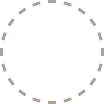

미완독묘

+아직 아무것도 읽지 않았어요.
첫번째 책을 추가해보세요.


+첫번째 책을 추가해보세요.
내 프로필
이 기기에서 자동으로 만들어진 프로필이에요
내 동기화 코드
다른 기기나 브라우저에서 이 코드를 입력하면 이어서 이 서재를 쓸 수 있어요.
다른 코드로 불러오기
다른 기기에서 쓰던 코드를 입력하면 이 기기가 그 코드를 이어받아요. 지금 이 기기의 서재는 사라져요.